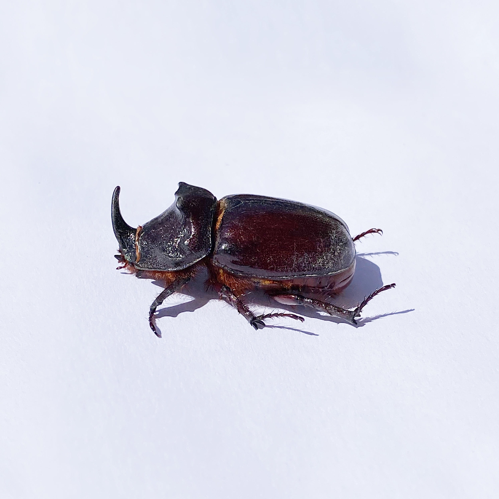

Scarabées
/ LE SCARABÉE
Espèce non menacée Description physique De l’ordre des coléoptères, les scarabées forment une famille d’insectes invertébrés ayant une tête courte et collée directement au corps, composé d’un abdomen et d’un thorax. Le scarabée a une forme ovale, et deux antennes en formes de pince qui se terminent par une petite massue. Il a six larges pattes qui ont de petites dents et deux paires d’ailes. La première paire correspond à des élytres solides qui sont comme des étuis qui cachent la deuxième paire d’ailes qui lui permet de voler. Il a une taille comprise entre 1 et 4 cm de long et sa couleur varie selon les espèces.
Son lieu de vie
Le milieu de vie du scarabée varie selon les espèces. Certaines telles que le scarabée du rosier et le scarabée de la vigne vivent dans les vignes et les milieux environnants, tandis que d'autres espèces préfèrent les égouts, les arbres en décomposition ou les déserts. On les retrouve sur presque tous les continents.
/ Son alimentation
Le régime de la larve est différent de celui du scarabée adulte. Les larves sont généralement saproxylophages, c'est-à-dire qu'elles se nourrissent souvent de bois pourri. Elles consomment aussi les racines de plantes et d'arbres. Les adultes en revanche se nourrissent de bourgeons, feuilles, fleurs et fruits de divers arbres et arbustes. D'autres espèces sont coprophages, c'est-à-dire qu'elles consomment des excréments.
Leur mode d'alimentation les rend redoutables pour les jardiniers car aussi bien les larves que les adultes peuvent endommager sérieusement les pelouses et les cultures. Cependant, les scarabées coprophages sont utiles car ils recyclent la matière organique.

/ Sa reproductiont
Comme tous les insectes, le scarabée passe par différentes mutations pour parvenir au stade adulte. Après l’accouplement, la femelle pond des œufs. Ces œufs par la suite sont engloutis dans une boule d’excréments et enfouis dans la terre. Ces excréments serviront ainsi de nourriture aux futures larves. Une dizaine de jours plus tard ou un mois après selon l’espèce de scarabée, les œufs éclosent pour donner des larves d’un aspect blanc et dodu, avec une forme courbée. Dès lors, elles construisent chacune une carapace bien dure en terre pour se protéger. Dans cette enveloppe, chaque larve continuera son processus de développement jusqu’à la maturation.
Son espérance de vie
Le scarabée peut vivre jusqu’à 3 ans s’il ne rencontre pas de prédateurs sur son chemin.
Le cri du scarabée
Certaines espèces de scarabée stridulent avec leurs élytres, produisant des sons semblables à ceux des criquets ou des grillons.
Signes particuliers
Un scarabée peut soulever des charges allant jusqu’à 850 fois son poids.